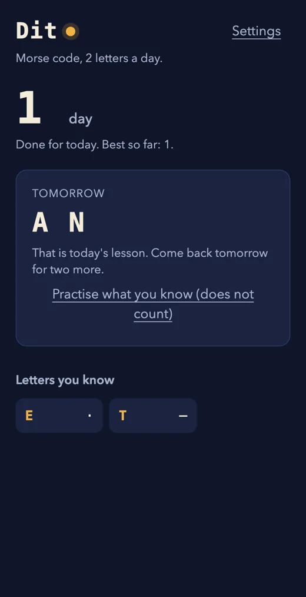
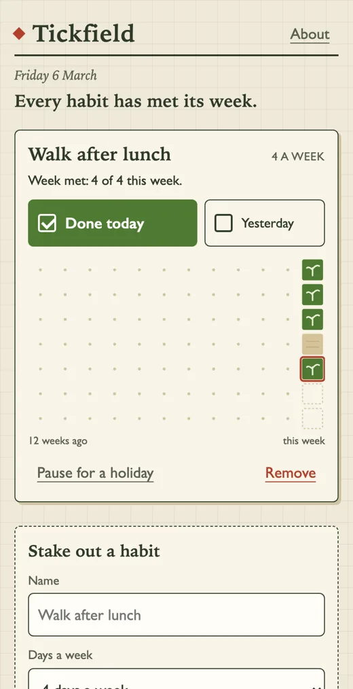
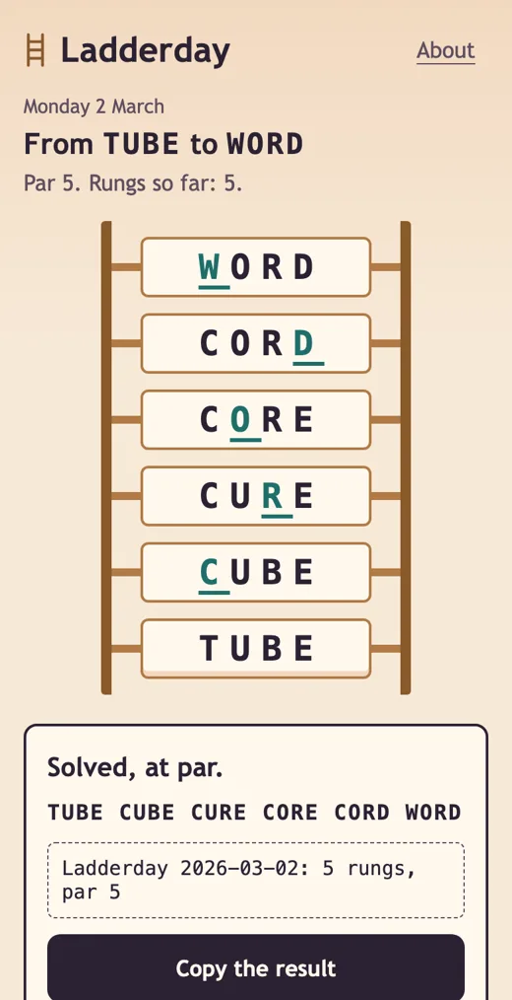
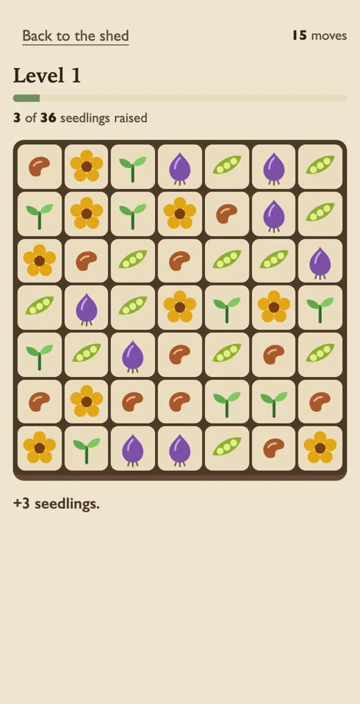
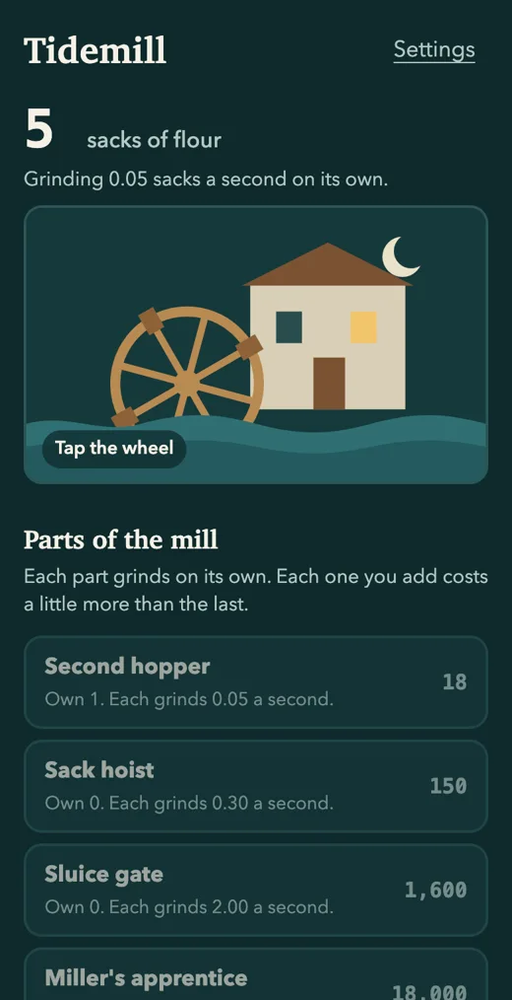
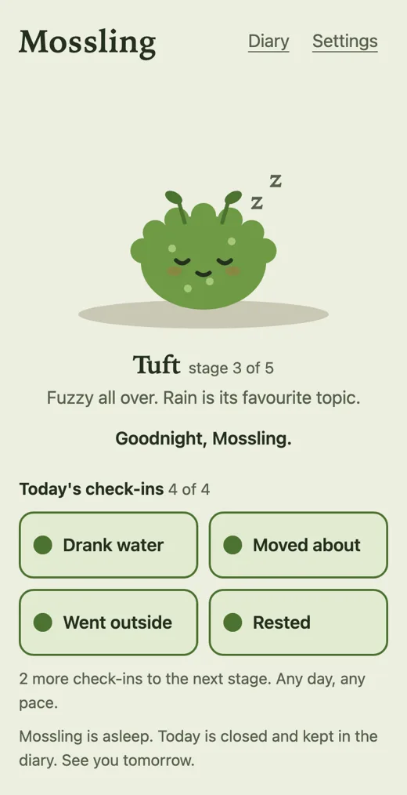
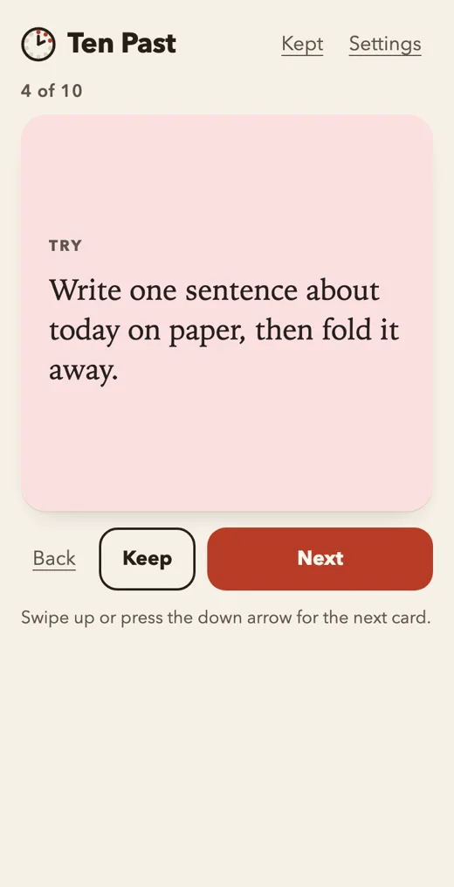
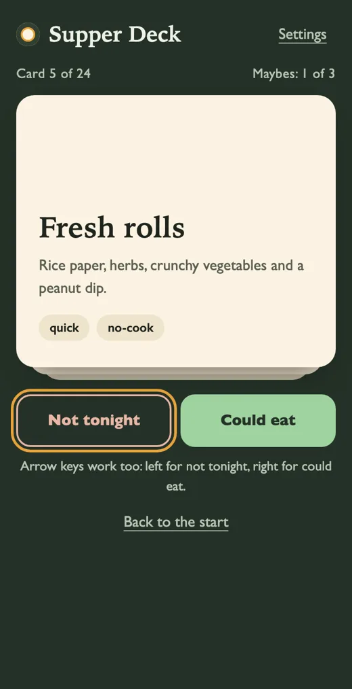
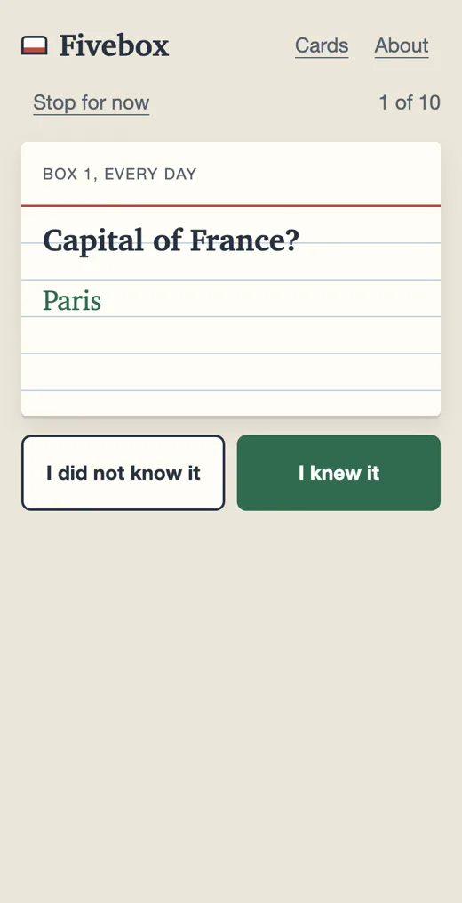
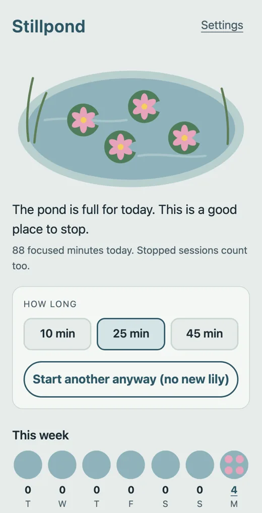

In no case does copyright protection for an original work of authorship extend to any idea, procedure, process, system, method of operation, concept, principle, or discovery, regardless of the form in which it is described, explained, illustrated, or embodied in such work.
17 U.S.C. 102(b)
The 100 kinds of app people come back to, and the line on what you may copy.
Read 001, The streak lesson Free chapter. Dit, its starter app, runs inside it. Run Dit on its own- 100 patterns
- 10 starters with tests
- 11 core chapters
- 275 PDF pages
What you may copy, what you may not
You may copy
- The idea, the rules, the loop, the genre
- Stock elements every app of that kind needs
- Common interface conventions that are functional
- Facts and public-domain material
- What you learned from studying an app
You may not copy
- Art, sounds, text, level layouts, code
- The overall look and feel of one specific app
- Names, icons, logos, or anything confusingly close
- An app so close it is indistinguishable
- Another developer's brand in your name or icon
Check first
- A patent on the exact mechanic
- Any paid random item
- Subscriptions and cancellation
- Anything a child might use
- Health, money and location data
Education, not legal advice. Sources and the date each was read are in the guide.
What is inside
- Core chapters11
- Patterns built in full10
- One page briefs100
- Starter apps with tests10
- PDF edition of 275 pages1
The hundred, on ten shelves
A Daily rituals
- 001Streak lesson
- 002Habit grid
- 003One-line journal
- 004Mood check-in
- 005Daily photo prompt
- 006Three good things
- 007Word of the day
- 008Morning plan and evening review
- 009Reminder tracker
- 010Days-since and days-until counter
B Daily puzzles
- 011Daily word puzzle
- 012Daily logic grid
- 013Daily grouping puzzle
- 014Mini crossword
- 015Daily quiz ladder
- 016Place guess
- 017Spot the difference
- 018Memory workout
- 019Tactics puzzle of the day
- 020Reveal-in-stages guess
C Casual games
- 021Match-three with a restoration layer
- 022Merge-two with orders
- 023Block-fit puzzle
- 024Sort-and-pour puzzle
- 025One-tap arcade
- 026Lane runner
- 027Number-merge slide
- 028Bubble aim-and-pop
- 029Tile-pair clearing
- 030Patience cards with a daily deal
D Idle, growth and care
- 031Idle clicker
- 032Idle adventure
- 033Shop tycoon
- 034Wait-and-harvest farm
- 035Town builder
- 036Care pet
- 037Dress-up and room maker
- 038Catch-and-collect
- 039Tower defence
- 040Run-based game with lasting upgrades
E Progress systems
- 041Collection album
- 042Season track
- 043Badge cabinet
- 044Levels and experience
- 045Weekly league
- 046Daily quests
- 047Card battler with earned decks
- 048Creature collector
- 049Skill tree
- 050Year-in-review recap
F Feeds and discovery
- 051Vertical short-video feed
- 052Finite daily feed
- 053Photo feed with follows
- 054Disappearing stories
- 055Link board with votes
- 056Short-post timeline
- 057Swipe-to-decide deck
- 058Read-later queue
- 059Audio queue with resume
- 060Serial fiction with episode drops
G Social loops
- 061Group chat with reactions
- 062Mutual daily exchange
- 063Friend photo widget
- 064Named question box
- 065Shared lists and polls
- 066Live rooms
- 067Consent-first location sharing
- 068Interest matching for adults
- 069Activity kudos
- 070Group challenge
H Body and health
- 071Step-fed companion
- 072Run and ride recorder
- 073Workout plan with rings
- 074Meal log
- 075Fasting timer
- 076Sleep log and wind-down
- 077Cycle tracker
- 078Breathing and meditation timer
- 079Measurement trend
- 080Quit counter
I Learning and focus
- 081Spaced-repetition flashcards
- 082Code and maths bites
- 083Book-in-brief and reading tracker
- 084Play-along music practice
- 085Children's learning game
- 086Question bank for tests
- 087Micro-course with certificate
- 088Focus timer that grows something
- 089To-do list with rewards
- 090Log-and-rate shelf
J Money, utility and AI
- 091Envelope budget
- 092Savings goal
- 093Price-watch alerts
- 094Stamp card
- 095Listings with saved searches
- 096Assistant chat with memory
- 097Companion character
- 098Photo and avatar maker
- 099Study helper
- 100Glanceable widget
Ten starters you can run

001Ditstreak lesson 
002Tickfieldhabit grid 
011Ladderdaydaily word puzzle 
021Potting Shedmatch three with a restoration layer 
031Tidemillidle clicker 
036Mosslingcare pet 
052Ten Pastfinite daily feed 
057Supper Deckswipe to decide 
081Fiveboxflashcards 
088Stillpondfocus timer
These are their own screens, photographed by the test run. Read the case note for each.
What this guide refuses to teach
- 01
Real money gambling and casino play - 02
Paid random item boxes - 03
Monetised loops aimed at children - 04
Fake scarcity and fake countdowns - 05
Guilt copy on the decline button - 06
Hidden renewals and a cancel that is hard to find - 07
Notifications that pretend to be a person - 08
Endless autoplay with no stopping point - 09
Bought or invented reviews - 10
Anonymous messaging aimed at teenagers - 11
Evading store review - 12
Companion characters that discourage leaving
This page uses none of them. There is no countdown here.
Three editions
| Edition | What it includes |
|---|---|
| Guide | The web guide, the PDF edition, the hundred briefs, the ten full chapters. |
| Guide plus Starter Kit | Everything above, the ten starter apps with their tests and harness, and the licence to build on them. |
| Complete | Everything above, plus each further batch of full chapters and starter apps as it is released. |
Prices are not set yet, and nothing is on sale.
Questions
Is it on sale yet?
No. Nothing is on sale and there is no checkout. The free chapter and the free starter app are open now, in full.
Is this a guide to making addictive apps?
It is a guide to the kinds of app people come back to, and it draws a line through each one. It teaches the version with an end, a rest and an easy exit, and it names twelve things it refuses to teach. If you want tricks that keep people scrolling against their will, this is the wrong guide.
Is this legal advice?
No. It is education. The legal chapter quotes each rule from the page it lives on and gives the date it was read. Laws differ by country and change. For a decision about your own app, ask a lawyer.
Will it show me how to rebuild a famous app?
No. Store review rejects close copies and courts have ruled against them. The guide teaches the pattern underneath, and every starter has its own subject, name and drawing so you start from an original.
Do I need to know how to code?
It helps to be able to read code. The starters are plain HTML, CSS and JavaScript with no build step, and each chapter explains what to ask an AI coding assistant for and how to check what comes back.
Which AI coding assistant do I need?
Any assistant that can read and edit the files in a folder. The prompts are written as plain requests and name no product.
Can I sell apps I build from the starters?
Yes. What you build is yours, commercial use included. You may not resell the kit itself, or publish a starter unchanged under its example name and art.
Will the starters work on my phone?
They are web pages and were tested in a headless Chromium browser on a phone-size touch screen: no errors, no sideways scroll, every scripted step passing. They were not tested on real phones or in other browsers.
How much of the hundred is finished?
Every one of the hundred has a one-page brief. Ten are built in full, each with a chapter and a working starter app. The rest are planned in batches, and the Complete tier includes them as they are released.
Will I earn money with this?
The guide makes no income promise. Its money chapter starts from the published base rate: the median subscription app earns about $72 a month a year after launch, according to a 2026 industry report that the chapter cites and links.
Why is there no countdown or launch discount?
Because the guide teaches you not to use them. When the prices are set, they will be the prices.